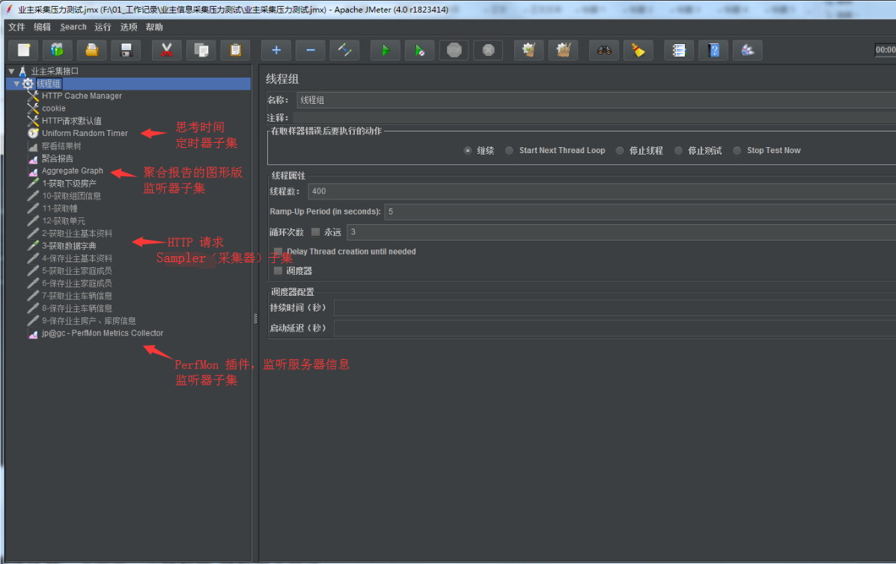

记一次性能测试 发表于 2019-07-12 测试工具 JMeter PerfMon 插件 – 监控服务器信息，如：CPU 内存 网络等 ServerAgent-2.2.3 – 配合 PerfMon 插件 性能测试报告模板 主要参数设置主界面  Jmeter 的组成：Jmeter 的组成是由一个大的测试计划，下面是一个线程组(即测试场景),线程组又包含Sampler，断言，定时器，监听器，配置元件，后置处理器，前置处理器，逻辑控制器的这样一个结构。 所以整个的配置参数都是基于线程组创建的。 阅读全文 »
移动 App 功能自动化测试环境搭建 发表于 2019-07-08 | 分类于 自动化测试 JDK 安装与配置 下载地址 JDK安装: 下一步即可！ 环境变量的配置a. 计算机 -> 系统属性 -> 高级系统设置 -> 环境变量 -> 系统变量 b. 新建 JAVA_HOME 阅读全文 »
解惑 Python 面向对象 发表于 2019-07-06 | 分类于 Python 特殊方法在编写 Python 类方法时，我们会经常用到这样两个特殊方法 __init__(), __str__()。下面来看下这两个方法的作用： __init__: 它根据类的定义以及传入的参数对新创建的对象进行初始化，相当于构造函数 __str__: 它用于定义如何打印对象信息，相当于 Java 中的 toString() 方法 __init__() 方法每次都要写？在类的定义中，__init__() 并不是必需的。只有当需要区分由该类创建的不同对象时，才需要指定 __init__() 方法。 阅读全文 »
基于 Postman + Newman + Jenkins 的 API 测试 发表于 2019-07-05 | 分类于 接口测试 Postman安装略过，直接上手。 新建 CollectionCollection 主要用于将一个模块的接口保存在一起，后续可集中导出执行测试 将一些通用的测试用例写进 Collection 的 Pre-request 和 Test 脚本中，这样可以不用在每个请求中写一遍相应测试用例。因为我们接口进行了加密，我这里就将一些接口解密、返回代码、状态码等写在下面。 阅读全文 »
Mysql 基础操作 发表于 2019-07-02 | 分类于 数据库 SQL 分类DDL: 数据库的定义，与数据库/表结构 create drop alter DML: 数据操纵语言，操作表数据 insert update delete DCL: 数据控制语言，设置用户的访问权限、安全 grant DQL: 数据查询语言 select from where 数据库操作数据库的创建1create database 数据库的名 character set 字符集 collate 校对规则 阅读全文 »